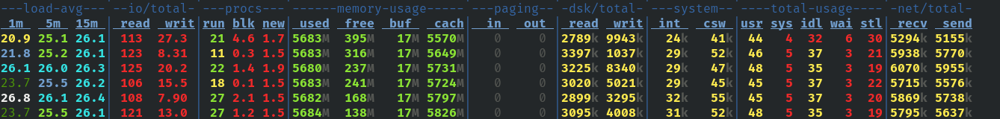
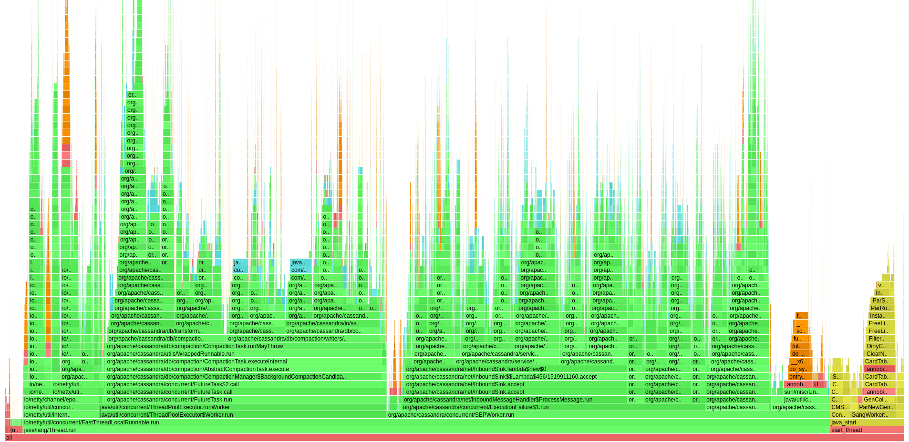

Apache Cassandra Setting Recommendation
This section provides the recommendation settings to optimize the Apache Cassandra performance.
Keyspace configuration
classon replication:SimpleStrategy, used for single datacenter.datacenter1: 2, full replication (means all data replicated to all 2 nodes by setting up the RF=2)
Table Configuration
chunk_length_in_kbon compression: set to 4kb for SSD and 64kb for HDD (sync with disk read_ahead).
Disk configuration
read_ahead: set to 4kb for SSD and 64kb for HDD. Below is an example of changing the read ahead value for/dev/vdbto 4kb SSD. Note that this change not permanent, admin need to re-set after a restart. Block calculation: setra in 512-byte sectors4kb = 4 * 1024 = 4096 byte.
setra block = 4096/512 = 8 blocks.
$ sudo blockdev --setra 8 /dev/vdb
Kernel Configuration
Adjust sysctl.conf
$ sudo nano /etc/sysctl.conf
Insert following script
net.core.rmem_max = 16777216 net.core.wmem_max = 16777216 net.core.rmem_default = 16777216 net.core.wmem_default = 16777216 net.core.optmem_max = 40960 net.ipv4.tcp_rmem = 4096 87380 16777216 net.ipv4.tcp_wmem = 4096 65536 16777216 vm.max_map_count = 1048575
Save the adjustment
sudo sysctl -p
Audit Log
To activate the audit log, please follow procedure below:
Modify cassandra.yaml. Ensure that
/path/to/logdir/is created and owned bycassandrauser.audit_logging_options: enabled: true logger: - class_name: BinAuditLogger audit_logs_dir: /path/to/logdir/ # included_keyspaces: # excluded_keyspaces: system, system_schema, system_virtual_schema # included_categories: excluded_categories: QUERY, DML
Restart the cassandra service.
sudo systemctl restart cassandraLogin to
cqlshand check the log.auditlogviewer /path/to/logdir/
Tuning Guide
System Resource
Install demonstrate
$ sudo dnf install dstat
Monitoring system resource
$ dstat -lrvn 10
 Check io read/write if there is high read/write operation then observe with command below.
$ sudo dnf install sysstat $ sudo iostat -xdm 2
See if there is high
r_awaitorw_awaitto check disk read/write latency and benchmark your disk usingfioCheck the memory. Cassandra uses cached memory (page cache), so high cached memory and low free memory is good.
Check network recv/send, also benchmark connection over node using
iperf3$ sudo dnf install iperf3
Execute command below on server, e.g., node 1.
$ iperf -s
Execute command below on client, e.g., node 2.
$ iperf -c 10.21.0.2
Check total-usage if there is a lot of
wait, there might be IO bottleneck.
JVM profiling
get asprof (https://github.com/async-profiler/async-profiler) and copy to directory which cassandra can access.
Generate flame graph for the cassandra JVM.
$ sudo /cassandra/async-profiler-3.0-linux-x64/bin/asprof -f /tmp/cass.html $(cat /var/run/cassandra/cassandra.pid)
Check the flamegraph to see the method calls and the percentage of time they are taking, and to check if there is a long GC pause.

Nodetool command
Important command to check nodes condition.
nodetool status: show cluster informationnodetool info: show node informationnodetool compationstatus: check compactionnodetool tpstats: check thread poolsnodetool tablehistograms: check histogramsnodetool tablestats: check table